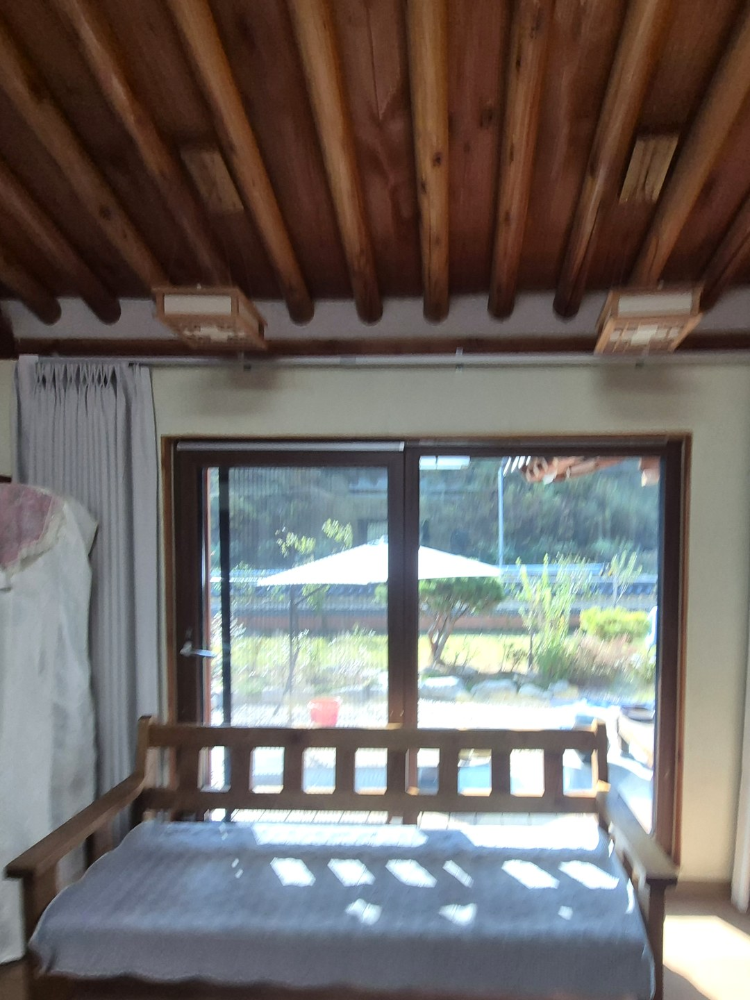
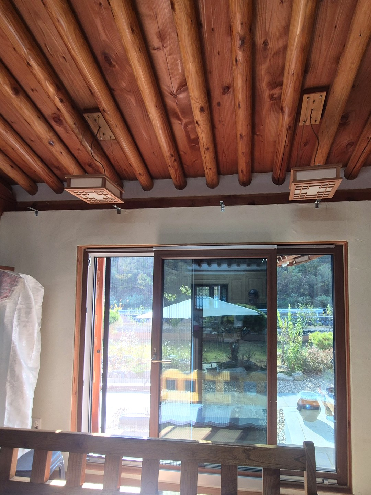
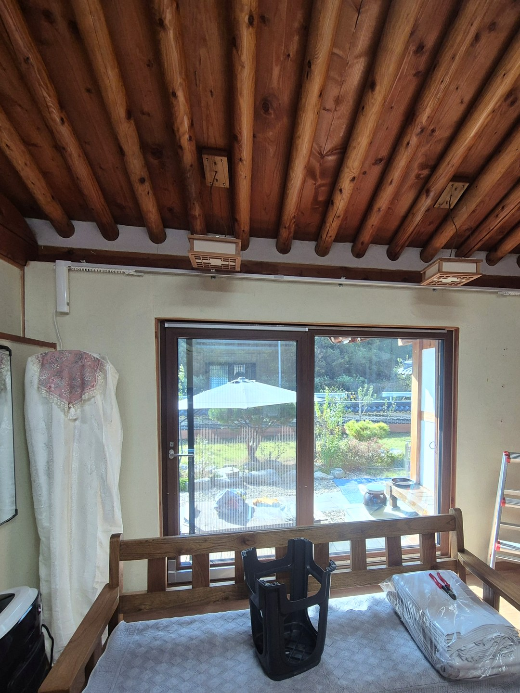
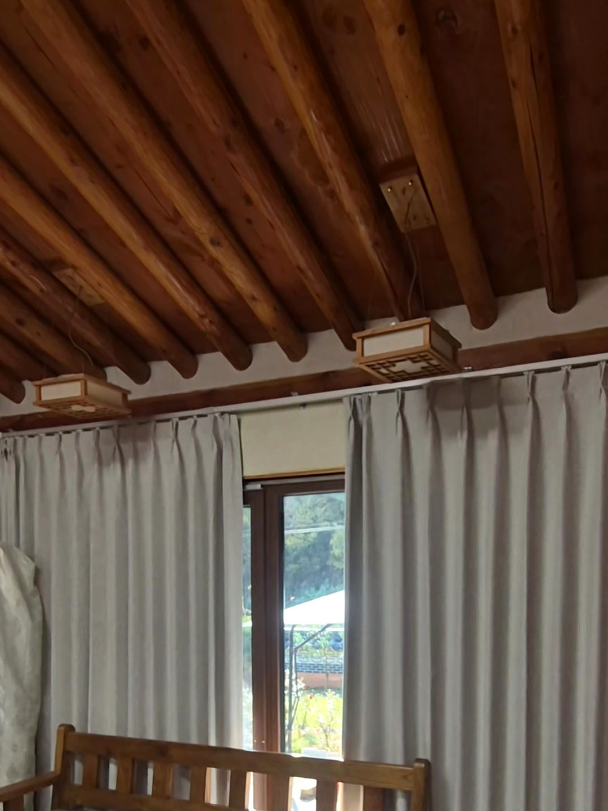
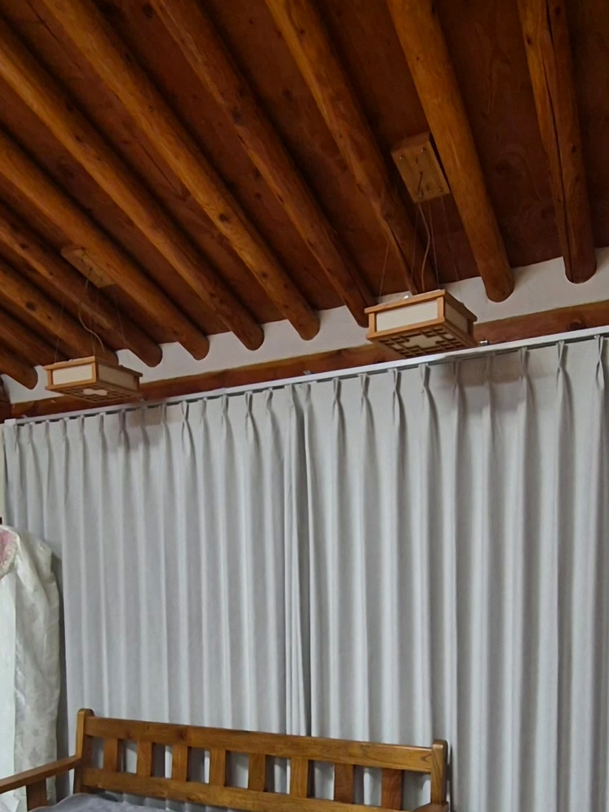
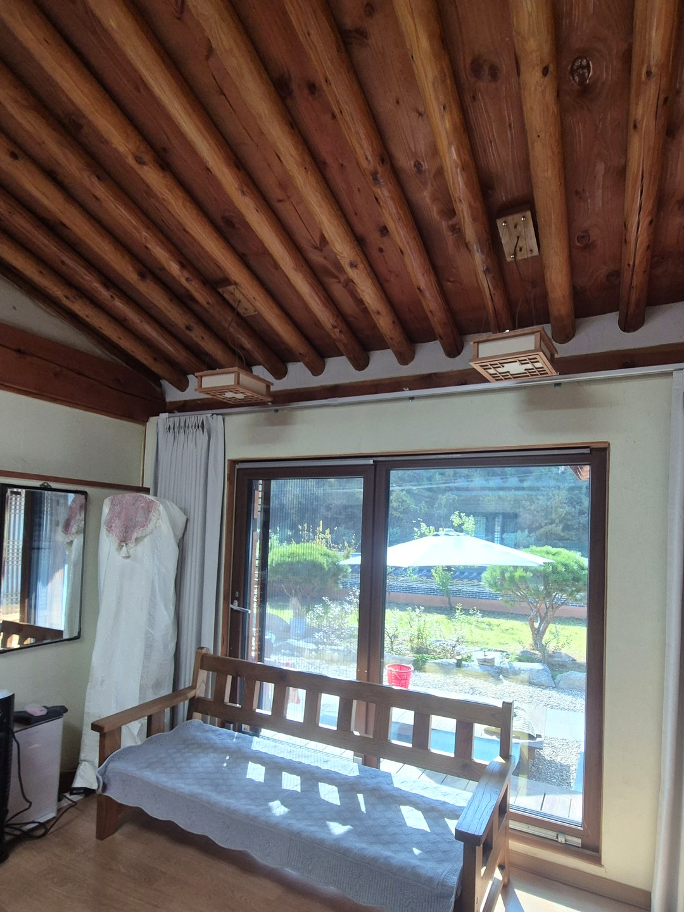

2026년 10월 30일 시공
영주 이산면 주택
전동커튼 설치 시공후기

이번 현장은 영주시 이산면의 주택입니다.
의뢰는 미국에서 왔습니다.
아드님 부부께서 어머님 댁에 달 전동커튼을 찾고 계셨습니다.
주택 창에 전동커튼을 고른 이유
이유는 두 가지였습니다.
주택이라 겨울철 단열을 챙겨야 했고, 어머님이 힘들이지 않고 쓰실 수 있어야 했습니다.

실제로 쓰실 분의 이야기를 듣는 것이 먼저라고 보고,
제작 전에 어머님 댁을 방문해 상담을 진행했습니다.
상담 뒤 제작, 그다음 설치

커튼은 상담 내용에 맞춰 제작한 뒤 현장으로 가져갔습니다.
레일이 올라간 자리는 천장 바로 아래 벽면입니다.
서까래가 그대로 보이는 천장이라 벽 쪽 위치를 기준으로 작업했습니다.
움직임을 확인했습니다


양쪽 커튼이 가운데에서 만나 창 전체를 덮는 것까지 영상으로도 남겼습니다.
마무리는 작동 설명이었습니다

설치 후 어머님께 작동 방법을 상세히 안내해 드리고 작업을 마쳤습니다.
전동커튼을 생각하신다면
모터가 움직이는 제품이라 전원 위치를 미리 확인해야 합니다.
수동 커튼에 비해 비용도 높은 편입니다.
커튼은 창가 냉기를 줄이는 보조 수단이며, 창호 단열을 대체하지는 않습니다.